Hybrid Identity Lab
Hybrid IAM: Testing Joiner-Mover-Leaver Automation Through Entra Connect
In Part 1 I hardened a Windows Server 2025 domain controller and measured the result. Here I synced it to an Entra ID lab tenant with Entra Connect and ran my own IAM automation against it, to answer one question: do the hybrid joiner, mover and leaver scripts in entra-iam-automation work against a real AD, or only on paper?
They work. Getting there turned up real problems worth knowing about: a UPN mismatch that would have broken two of the three scripts, a Graph SDK bug on Windows PowerShell 5.1, and a guard that stopped an account takeover. Each test below has its console output (sanitised) and the Entra audit log behind it.
Project Snapshot
Overview
What I Built
- Entra Connect Sync on the hardened DC, password hash sync
- Sync scoped to one OU, so admin and built-in accounts stay on-prem
- AD Recycle Bin, department OUs and a Leavers OU
- Six tests: prep, joiner, mover, leaver, source of authority, restore
- One test user, taken through her whole lifecycle
- An audit trail tying every step to Entra’s own log
Skills Demonstrated
- Hybrid identity design with Entra Connect
- Joiner-mover-leaver automation (PowerShell, Microsoft Graph)
- Source of authority and source anchor behaviour
- Safe offboarding order with password hash sync
- Troubleshooting module and platform problems
- Evidence-led testing, one commit per test
| Test | Result |
|---|---|
| 1 Prep | Scripts, parameters and requirements mapped; a UPN mismatch found before any run |
| 2 Joiner | New AD user to synced, licensed Entra user in 20 seconds |
| 3 Mover | HR to Finance; dynamic groups re-scoped; leftover AD access listed |
| 4 Leaver | Disabled, sessions revoked, licence and groups removed in 23 seconds |
| 5 Source of authority | Cloud edits on a synced user refused by the script and by Graph |
| 6 Restore | Deleted and restored in AD: same cloud account back, no duplicate |
Phase 1 · Sync
Entra Connect on the Hardened DC
I chose Entra Connect Sync over Cloud Sync because the hybrid scripts drive the ADSync module, and only Connect Sync installs it. The hardening from Part 1 got in the way straight away: Edge is blocked on the DC, so the installer was downloaded on the host and copied in through Hyper-V.
| Setting | Choice | Why |
|---|---|---|
| Sign-in | Password hash sync | No extra servers; works when AD is down |
| Scope | Only the Lab Users OU | Administrator, service accounts and DCs never reach the cloud |
| UPN suffix | hawkode.lab can’t be verified | Users fall back to the tenant’s onmicrosoft.com domain |
| Source anchor | mS-DS-ConsistencyGuid | Seeded from the objectGUID; links each AD user to one cloud user |
| AD Recycle Bin | Enabled after install | Entra Connect flagged it; test 6 depends on it |
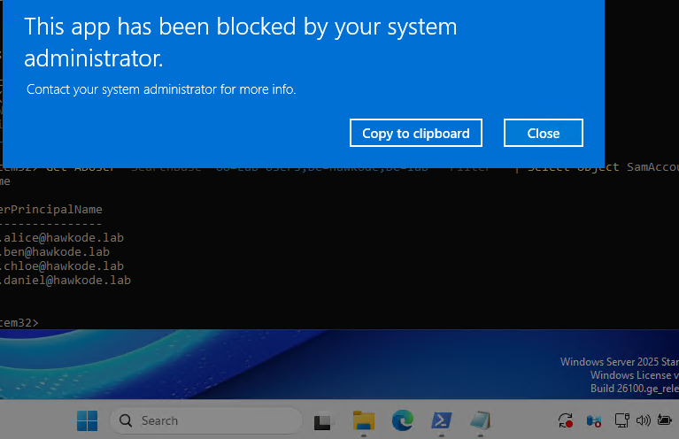
Copy-VMFile instead.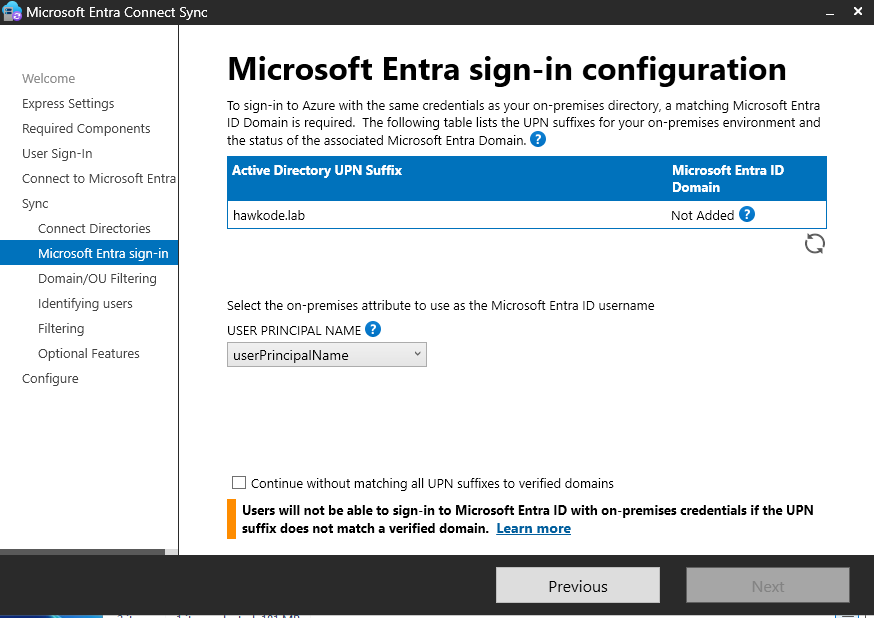
hawkode.lab isn’t routable, so Entra can’t verify it. This is where the UPN mismatch in test 1 starts.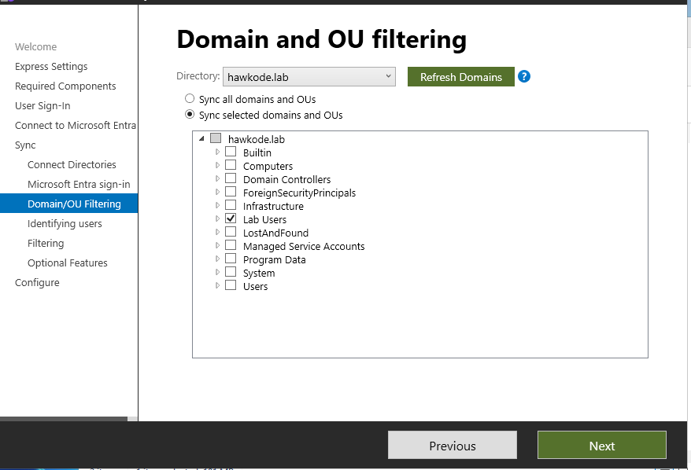
Lab Users.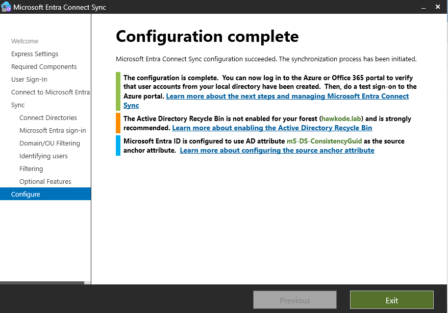
mS-DS-ConsistencyGuid.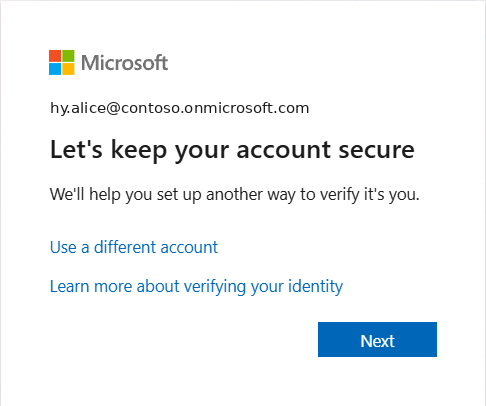
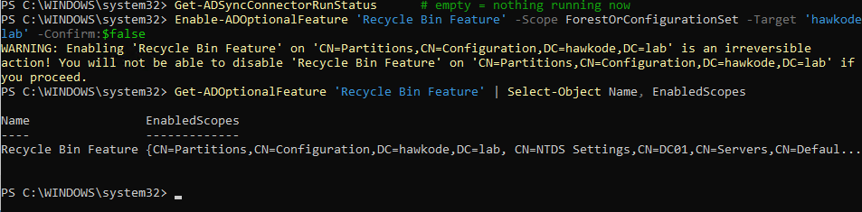
Test 1 · Prep
Read Before You Run
Before running anything I read what each hybrid script needs. They run on DC01, which has the AD module and Entra Connect. Each one makes its AD change, runs one delta sync over WinRM, waits for the cloud to catch up, then finishes through Graph.
Finding: UPN Mismatch
- The mover and leaver look up a user in AD and in Entra with the same UPN
- The first synced users were
@hawkode.labin AD but onmicrosoft.com in Entra - Neither lookup would find both, so both scripts would fail
- Fix: add the onmicrosoft.com domain as a UPN suffix in AD, and use it for new users
Setup Problems Solved
- Graph modules installed but invisible: DC01’s module path has no user folder. Installed for all users
Connect-MgGraphfails on 5.1: a known assembly bug in Graph SDK 2.34+. Moved DC01 to PowerShell 7- Config copied from the cloud-only setup had no hybrid keys. Rewritten for the lab
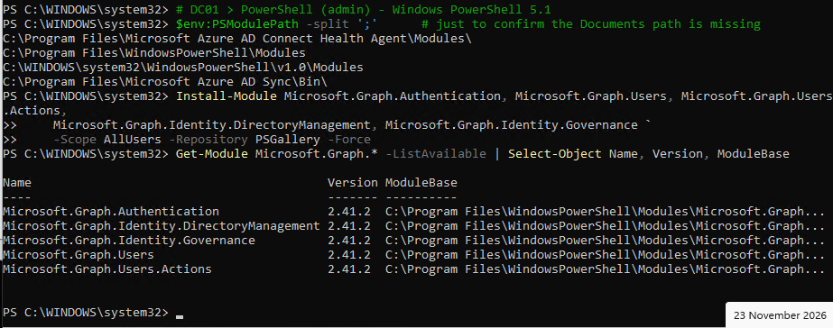
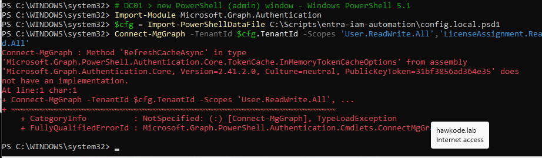
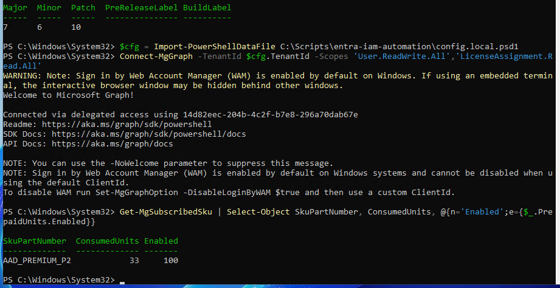
Test 2 · Joiner
From AD Account to Licensed Cloud User
The first dry run stopped, which was the script working as intended. A cloud-only user from earlier tests already had that UPN. Creating the AD account would have made Entra Connect soft-match it onto the cloud account and take it over.
PS> .\Hybrid\New-HybridJoiner.ps1 -GivenName Oliver -Surname Bennett -Department HR -JobTitle 'HR Advisor' -WhatIf Exception: Row 1: oliver.bennett@contoso.onmicrosoft.com already exists in Entra ID. Entra Connect would soft-match the new AD account onto it. Nothing was created. PS> .\Hybrid\New-HybridJoiner.ps1 -GivenName Harriet -Surname Cole -Department HR -JobTitle 'HR Advisor' 18:52:25 [INFO] Created AD user harriet.cole@contoso.onmicrosoft.com in OU=HR,OU=Lab Users,DC=hawkode,DC=lab 18:52:43 [INFO] Delta sync on DC01.hawkode.lab: Completed (Success) 18:52:44 [INFO] Usage location GB set on harriet.cole@contoso.onmicrosoft.com 18:52:45 [INFO] Assigned AAD_PREMIUM_P2 to harriet.cole@contoso.onmicrosoft.com 18:52:45 [INFO] Hybrid joiners processed: 1. CSV (no passwords): output\HybridJoiners-20261123-185245.csv WARNING: Temporary passwords are shown once. Pass them on through a one-time secret link, not email or chat.
| Check | Result |
|---|---|
| AD | In OU=HR,OU=Lab Users, department HR, title HR Advisor |
| Entra | Synced from AD, usage location GB, department and title match, 1 licence |
| Groups | Joined Dept-HR by its dynamic rule |
Test 3 · Mover
HR to Finance, and What Didn’t Move
Before the move I added Harriet to an AD group, GG-HR-FileShare, standing in
for an HR file share. The mover changes department, title and OU in AD, syncs, and lists
access that doesn’t follow the department. It removes nothing: only a person knows
whether Finance still needs that share.
PS> .\Hybrid\Move-HybridUser.ps1 -UserPrincipalName $upn -Department Finance -JobTitle 'Finance Analyst' 18:57:25 [WARN] harriet.cole@contoso.onmicrosoft.com has no manager in AD. Add -Manager so the leaver can hand over the mailbox later. 18:57:26 [INFO] Moved harriet.cole@contoso.onmicrosoft.com in AD. department 'HR' -> 'Finance', job title 'HR Advisor' -> 'Finance Analyst', move to OU=Finance,OU=Lab Users,DC=hawkode,DC=lab, delta sync 18:57:43 [INFO] Delta sync on DC01.hawkode.lab: Completed (Success) 18:57:44 [INFO] harriet.cole@contoso.onmicrosoft.com synced. Dynamic groups update within minutes. 18:57:44 [WARN] 1 item(s) do not follow the move for harriet.cole@contoso.onmicrosoft.com. Review with the new manager: AD group: GG-HR-FileShare
| Check | Before | After |
|---|---|---|
| AD OU | OU=HR,OU=Lab Users | OU=Finance,OU=Lab Users |
| Department (AD and Entra) | HR | Finance |
| Title (AD and Entra) | HR Advisor | Finance Analyst |
| Cloud groups | Dept-HR | Dept-Finance, GG-HR-FileShare |
The dynamic groups re-scoped on their own. GG-HR-FileShare stayed, in AD and
as a synced group in Entra: exactly the leftover access the review list flagged. Left
unreviewed, that’s how permissions pile up over the years.
Test 4 · Leaver
Offboarding in the Right Order
With password hash sync, a leaver’s cloud account accepts the old password until the sync marks it disabled. So the leaver works AD first, then syncs and waits for Entra to show the account disabled, and only then revokes sessions and removes the licence. I checked the sync scope first: the Leavers OU sits inside it, so the cloud account is disabled rather than deleted.
PS> .\Hybrid\Disable-HybridLeaver.ps1 -UserPrincipalName $upn -Ticket LAB-0004
19:05:16 [INFO] Leaver plan for harriet.cole@contoso.onmicrosoft.com: AD: disable; reset password;
remove from 1 AD group(s): GG-HR-FileShare; clear department 'Finance';
description 'Leaver 2026-11-23 LAB-0004 by administrator'; move to OU=Leavers,OU=Lab Users,DC=hawkode,DC=lab;
delta sync; Entra: revoke sessions; remove direct licences
Are you sure you want to perform this action? [Y] Yes [N] No (default is "Y"): y
19:05:20 [INFO] AD: disabled and password reset: harriet.cole@contoso.onmicrosoft.com
19:05:20 [INFO] AD: removed harriet.cole@contoso.onmicrosoft.com from GG-HR-FileShare
19:05:20 [INFO] AD: department cleared, description stamped, moved to OU=Leavers,OU=Lab Users,DC=hawkode,DC=lab
19:05:38 [INFO] Delta sync on DC01.hawkode.lab: Completed (Success)
19:05:38 [INFO] Sessions revoked: <object-id>
19:05:39 [INFO] Removed 1 direct licence(s): <object-id>
19:05:39 [INFO] Leaver done for harriet.cole@contoso.onmicrosoft.com, no manual items.
| Check | After |
|---|---|
| AD | Disabled, in Leavers, department empty, description stamped with the ticket, 0 groups |
| Entra account | Disabled |
| Sessions valid from | 23 Nov 2026 19:05:38 |
| Licences and groups | 0 and none: the file share group went through the sync, Dept-Finance through its rule |
Test 5 · Source of Authority
The Cloud Is Read-Only for Synced Users
For a synced user, AD is the source of authority. I tried to break that three ways.
PS> .\Cloud\Move-CloudUser.ps1 -UserPrincipalName $upn -Department IT Exception: harriet.cole@contoso.onmicrosoft.com is synced from AD. Use the Hybrid script. PS> Update-MgUser -UserId $upn -Department 'IT' Update-MgUser_UpdateExpanded: Unable to update the specified properties for on-premises mastered Directory Sync objects or objects currently undergoing migration. Status: 400 (BadRequest) ErrorCode: Request_BadRequest PS> .\Hybrid\Move-HybridUser.ps1 -UserPrincipalName 'oliver.bennett@contoso.onmicrosoft.com' -Department Finance -WhatIf Exception: oliver.bennett@contoso.onmicrosoft.com not found in AD.
The script guard gives a clear next step instead of a raw Graph error, and even without it Graph refuses the change. Not everything is AD-mastered, though: usage location and licences live only in the cloud, which is why the joiner sets them through Graph on a synced user.
Test 6 · Restore
An Accidental Delete, Undone
I deleted Harriet in AD, synced, and found her in Entra’s Deleted users. Then I restored her from the AD Recycle Bin and synced again. Pass meant the same cloud account coming back, not a new one.
PS> [Convert]::ToBase64String($guid.ToByteArray()) # equals the cloud OnPremisesImmutableId PS> Remove-ADUser -Identity $guid -Confirm:$false PS> Invoke-Command -ComputerName DC01.hawkode.lab { Start-ADSyncSyncCycle -PolicyType Delta } # Success PS> Invoke-MgGraphRequest -Uri "v1.0/directory/deletedItems/$($cloud.Id)" | Select-Object displayName Harriet Cole PS> Get-ADObject -Filter "objectGUID -eq '$guid'" -IncludeDeletedObjects | Restore-ADObject PS> Invoke-Command -ComputerName DC01.hawkode.lab { Start-ADSyncSyncCycle -PolicyType Delta } # Success
| Check | Before delete | After restore |
|---|---|---|
AD objectGUID | <guid> | Same |
| AD OU and state | Leavers, disabled | Same |
| Entra object ID | <object-id> | Same |
Entra ImmutableId | Base64 of the objectGUID | Same |
The Recycle Bin keeps the object’s identity, including the source anchor, so Entra
Connect matched the restored account to the soft-deleted cloud one and brought it back.
Recreating the account instead would have meant a new objectGUID, a new
anchor, and either a second cloud account or a soft-match by UPN, with the old object
ID and its history gone.

Evidence
The Audit Trail
Everything the scripts logged in the console also shows up in Entra’s audit log, recorded by Microsoft, including the refused edit from test 5. Times are UTC.
| Time | Activity | Test |
|---|---|---|
| 18:52:39-45 | Add user, update, change licence | 2 Joiner |
| 18:52:54 | Add member to group (Dept-HR) | 2 Joiner |
| 18:57:39-58:19 | Update user; Dept-Finance in, Dept-HR out | 3 Mover |
| 19:05:33-40 | Disable account, refresh tokens revoked, licence and groups removed | 4 Leaver |
| 19:17:52 | Update user: Failure (property update not allowed) | 5 Source of authority |
| 19:21:12 | Delete user | 6 Restore |
| 19:22:58 | Restore user | 6 Restore |
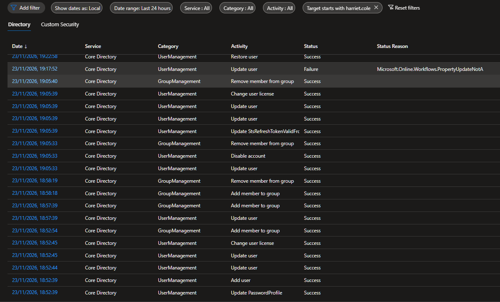
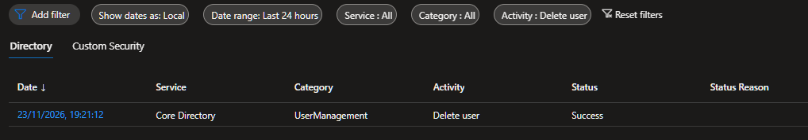
Scope & Honesty
Lab vs Production
Entra Connect on the DC: done to fit in 16 GB. In production it goes on a dedicated member server, treated as Tier 0, and the scripts run from a management server.
Domain: the onmicrosoft.com domain stands in for a verified company domain. In production the AD UPN suffix and the verified domain are the same real domain, which removes the mismatch from test 1.
No mailbox: the trial licence has no Exchange plan, so the leaver skipped converting the mailbox to shared. In production that step runs first, with HR agreeing who gets access.
Temporary passwords: shown once in the console here. In production they go to the manager through a one-time secret link.
Next
Attack and Detect
Part 1 left two gaps open on the DC: Kerberos ticket auditing and LSA protection. The next phase attacks both from KALI01, detects the attacks in the DC’s event logs, then fixes and rechecks.
Part 1: Harden the DC View on GitHub The Automation Back to Projects